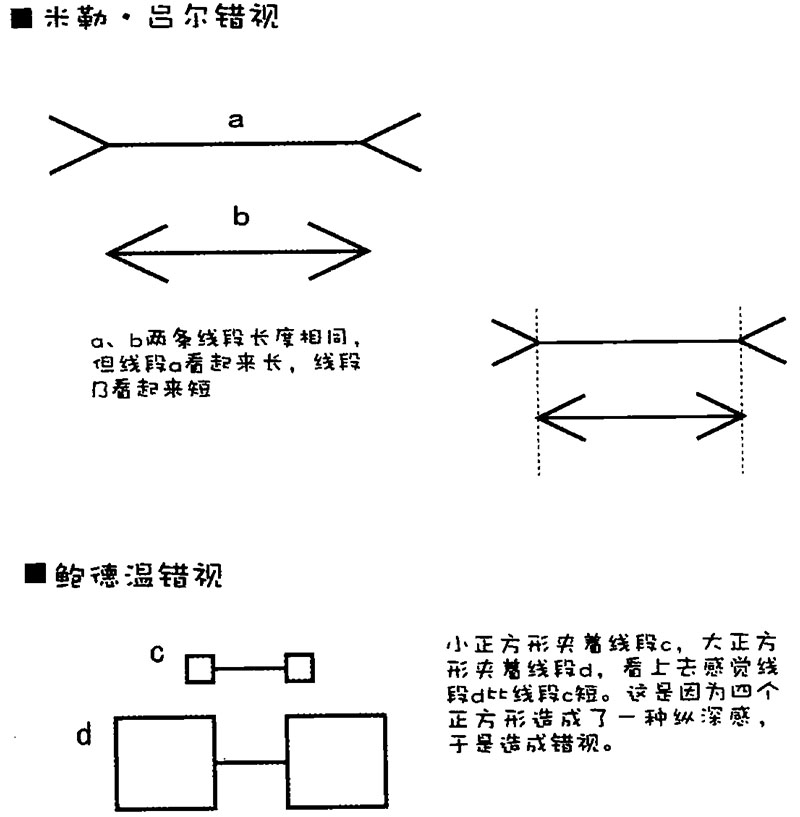
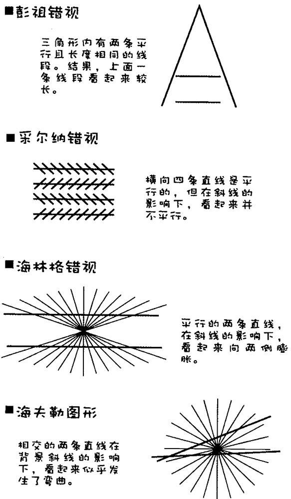
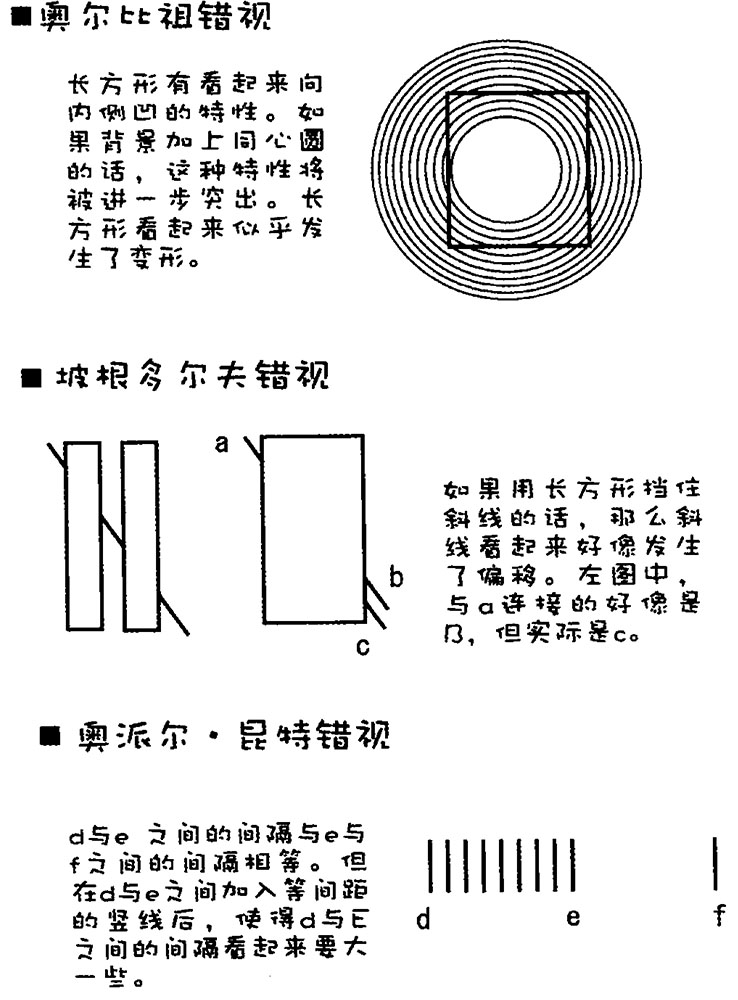
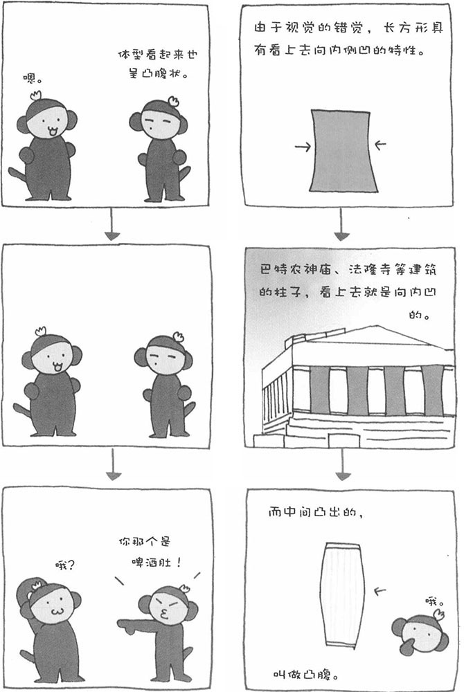
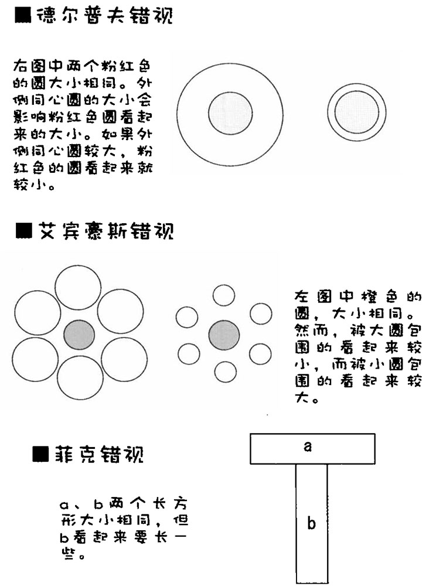
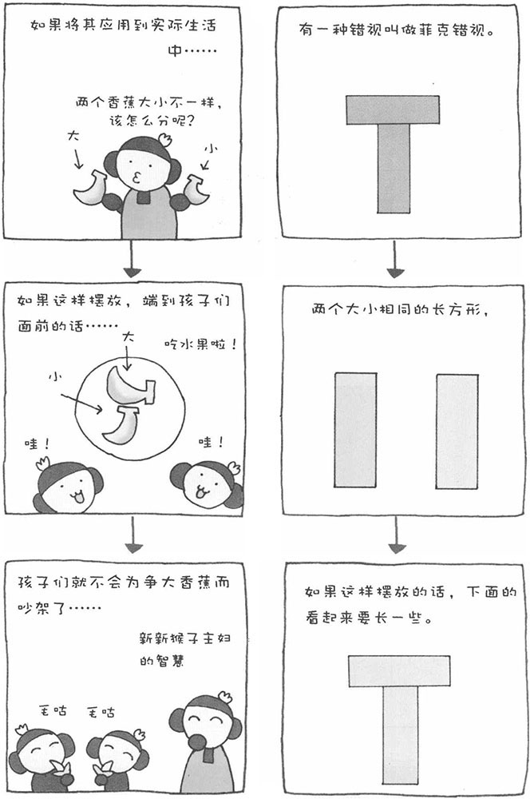
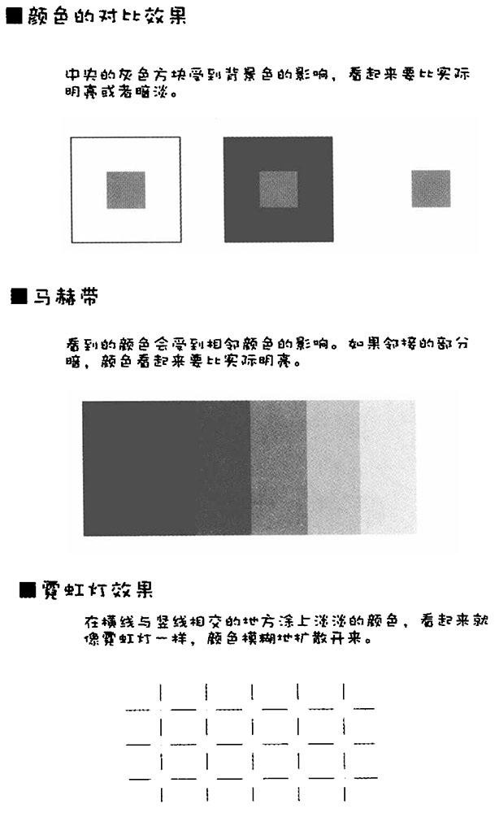
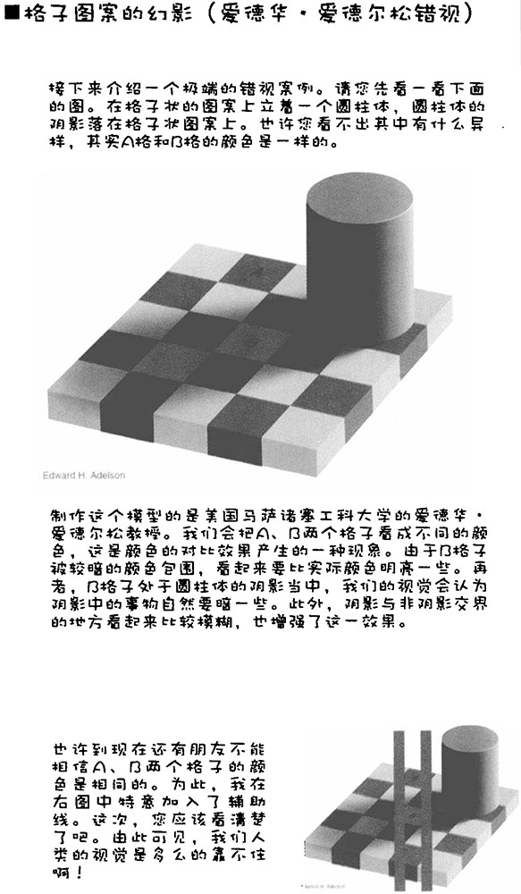
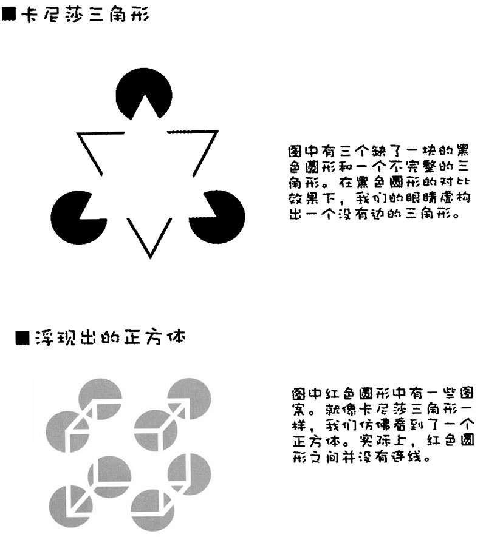
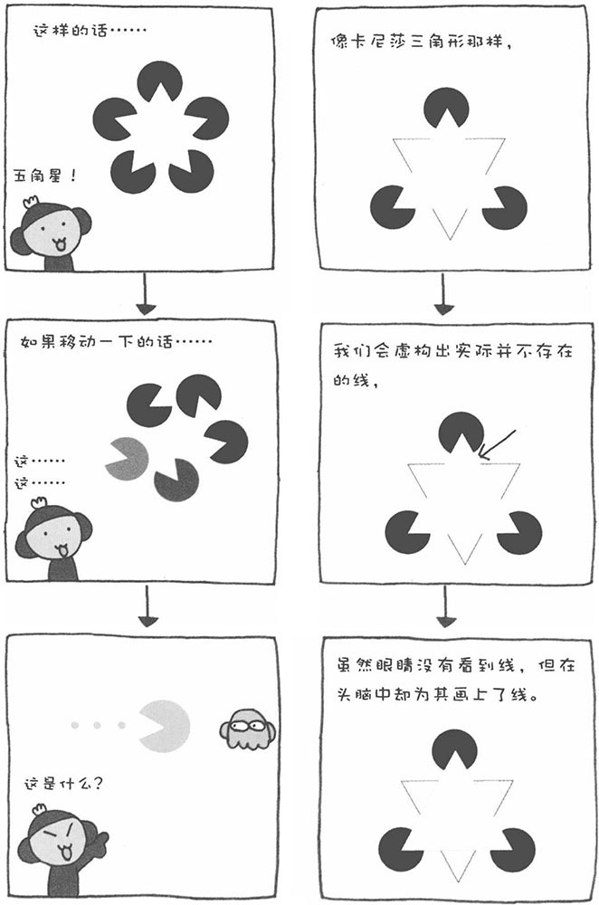

前面讲了常识或者固定观念给视觉带来的影响，除此之外，视觉还经常出现错觉。在心理学上，这种错觉被称为"错视"。引起错视的原因有很多，我认为主要是由于自己的信息处理模式太固定，才会引起错视。








我们的视觉会对看不清的事物进行推测，并主观虚拟出一个物体。接下来，就为您介绍两个这样的例子。第一个例子为卡尼莎三角形，看上去好像有一个三角形跃然纸上，可是这个三角形不完整，是我们的眼睛推测上面有个障碍物，于是就虚构出了并不存在的三角形。

